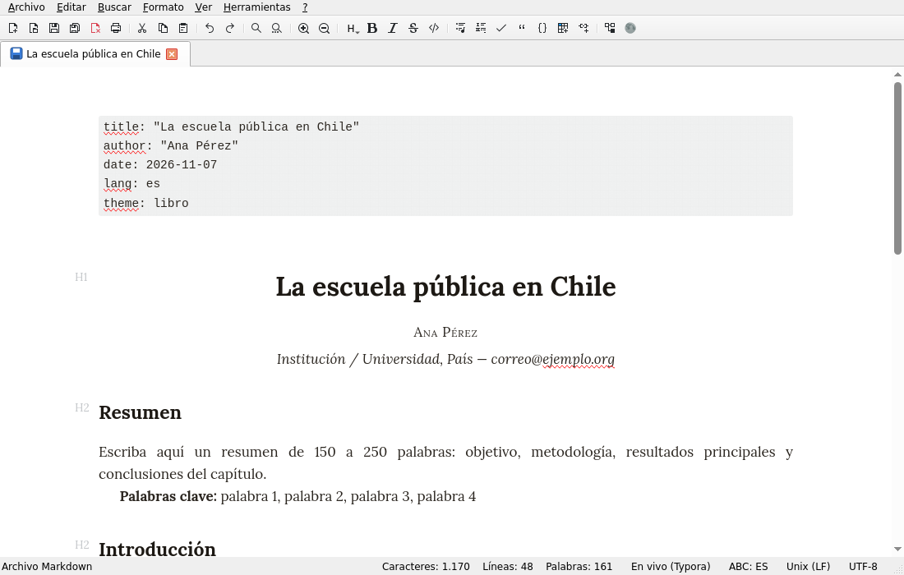

MattPad
Editor Markdown con plantillas y temas para nuestras autoras y autores

Descargar
Recomendado para su equipo
macOS – Apple Silicon
Mac con chip M1, M2, M3 o M4 (desde fines de 2020). macOS 12 o superior.
Descargar
.dmg
Recomendado para su equipo
macOS – Intel
Mac más antiguos con procesador Intel. macOS 12 o superior.
Descargar
.dmg
Instalación y primer inicio
Windows
- Abra el archivo
.msidescargado y acepte la licencia. - Si aparece «Windows protegió su PC»: haga clic en «Más información» y luego en «Ejecutar de todas formas».
- Matt|Pad queda en el menú Inicio y en el escritorio.
macOS
- Abra el archivo
.dmgy arrastre MattPad a la carpeta «Aplicaciones». - La aplicación no está certificada por Apple. La primera vez: macOS 15 o superior: ábrala una vez, cierre el aviso con «Listo», luego Ajustes del Sistema → Privacidad y seguridad → abajo «Abrir igualmente». macOS 12–14: clic derecho en MattPad → «Abrir» → «Abrir».
- ¿Qué Mac tengo? Menú Apple → «Acerca de este Mac»: «Chip» = Apple Silicon, «Procesador Intel» = Intel.
Linux
Haga doble clic en el archivo (se abre en «Software» o «Discover») o, en una terminal: flatpak install --user MattPad-1.0.0-Linux.flatpak
Qué ofrece
- Escriba en Markdown: el formato aparece mientras escribe.
- Plantillas para capítulos académicos, relatos y notas biográficas, en español y portugués (Archivo → Nuevo desde plantilla).
- Tema «Libro»: tipografía de libro, texto justificado con división silábica.
- Imprimir y exportar a PDF o HTML con el tema elegido.
- Revisión ortográfica en español, portugués, inglés y alemán.
- Interfaz en español, portugués, inglés y alemán; toma el idioma del sistema.